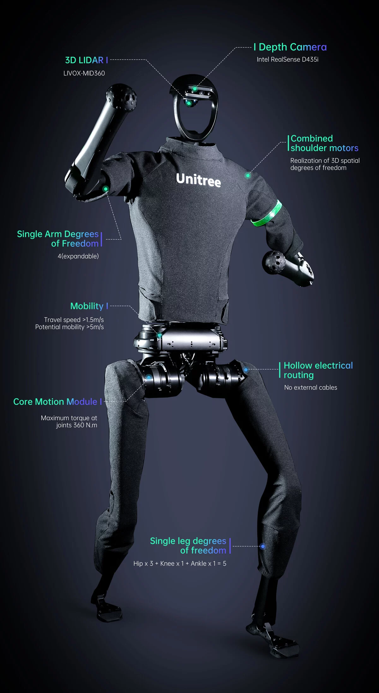

Fichas tecnicas
Esta seccion reune la informacion tecnica de los robots que obtuvieron los
mejores resultados en la competencia, junto con el historial de pruebas en las
que participaron.
Tiangong Ultra
Fabricante: X-Humanoid

Especificaciones tecnicas de Tiangong Ultra
| Altura |
1,80 metros |
| Peso |
52 kilogramos |
| Grados de libertad |
28 |
| Autonomia |
2 horas de operacion continua |
| Sensores |
Camaras estereoscopicas y unidad de medicion inercial |
Historial de participacion
Pruebas disputadas por Tiangong Ultra
| Prueba |
Marca |
Resultado |
| 100 metros |
9,39 segundos |
Oro |
| 400 metros |
38,15 segundos |
Oro |
| 1.500 metros |
2 minutos 21,64 segundos |
Oro |
Unitree H1
Fabricante: Unitree Robotics

Especificaciones tecnicas de Unitree H1
| Altura |
1,80 metros |
| Peso |
47 kilogramos |
| Grados de libertad |
19 |
| Autonomia |
1 hora y 30 minutos de operacion continua |
| Sensores |
Sensor de profundidad y unidad de medicion inercial |
Historial de participacion
Pruebas disputadas por Unitree H1
| Prueba |
Marca |
Resultado |
| Salto de altura |
2,88 metros |
Oro |
| Artes marciales |
Segunda posicion |
Plata |
Consultar el medallero completo